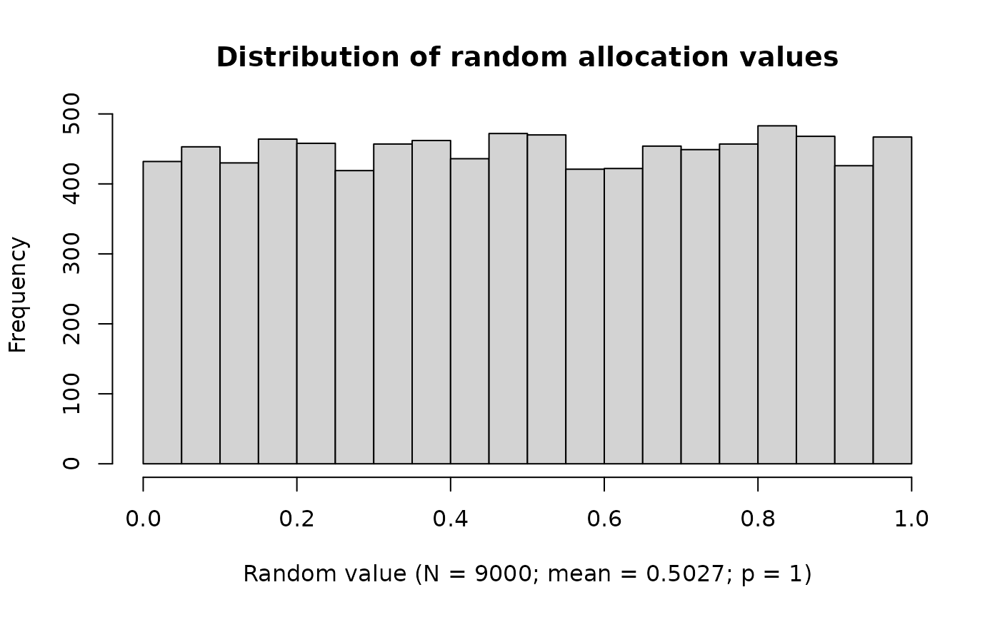
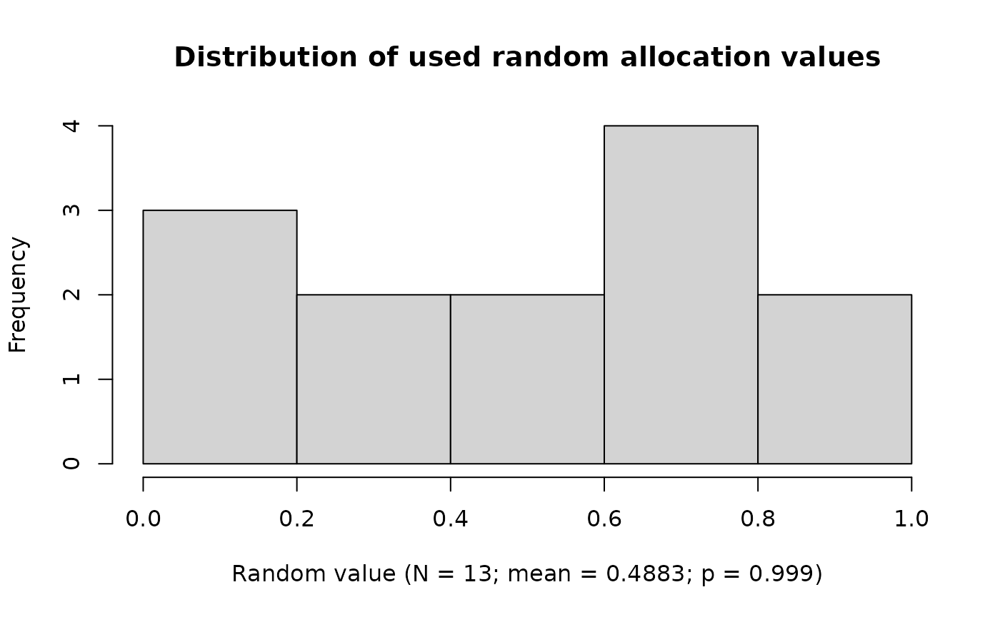

Getting Started with randomforge
Friedrich Pahlke
2025-11-25
Source:vignettes/randomforge_getting_started.Rmd
randomforge_getting_started.RmdIntroduction
randomforge is an open-source R package providing a
transparent and modular framework for clinical trial
randomization.
This vignette gives a quick introduction on how to install the package,
create a simple project, configure a permuted block randomization
method, and generate subject allocations.
If you are new to randomization frameworks or want a minimal working example, this is a good place to start.
Installation
At this stage, randomforge is available only on
GitHub:
# install.packages("remotes")
remotes::install_github("RCONIS/randomforge")Creating a Randomization Project
Every workflow begins with a RandomProject stored inside
an in-memory RandomDataBase:
library(randomforge)
#> randomforge developer version 0.1.0.9046 loaded
# Create an in-memory randomization database
randomDataBase <- getRandomDataBase()
# Define a project
randomProject <- getRandomProject("Example Trial")
# Store the project in the database
randomDataBase$persist(randomProject)A project groups all configurations, subjects, and resulting allocations.
Defining a Randomization Configuration
A configuration defines:
- treatment arms
- allocation parameters
- random number buffer settings
- seeds
- optional stratification
Example:
config <- getRandomConfiguration(
randomProject = randomProject,
treatmentArmIds = c("A", "B"),
seed = createSeed(),
ravBufferMinimumSize = 1000L,
ravBufferMaximumSize = 10000L
)
config
#> random-project: Example Trial [2025-11-25] 55201d8b-f495-4dda-ad42-602a722392a1
#> uniqueId: d7829d53-9941-4042-970d-61ffc5dd9965
#> creationDate: 2025-11-25
#> seed: 3220245
#> ravBufferMinimumSize: 1000
#> ravBufferMaximumSize: 10000
#> treatmentArmIds: 'A', 'B'
# Store the configuration
randomDataBase$persist(config)Creating a Block Randomization Method
randomforge currently supports permuted block
randomization (PBR) as a fully working implementation.
You can define variable block sizes:
# Define variable block sizes
blockSizes <- getBlockSizes(config$treatmentArmIds, c(4, 6))
# Define a block randomization method
blockSizeRandomizer <- getRandomBlockSizeRandomizer(blockSizes)
blockSizeRandomizer
#> RandomBlockSizeRandomizer(seed = 4360457, numberOfValues = 1000, currentIndex = 1)
randomMethodPBR <- getRandomMethodPBR(
blockSizes = blockSizes,
fixedBlockDesignEnabled = FALSE,
blockSizeRandomizer = blockSizeRandomizer
)Create a Random Allocation Value Service
# Create a random allocation value service
ravService <- getRandomAllocationValueService()
ravService$createNewRandomAllocationValues(config)
#> Create 9000 new random allocation values (seed = 3220245)Quality control of the random numbers used for randomization can be visualized by
ravService |>
plot(usedValuesOnly = FALSE)
Other key performance indicators are planned for future releases.
Running Randomization
To generate assignments, create a random allocation value service,
then call getNextRandomResult().
# Create a few randomization results
resultList <- lapply(1:12, function(i) {
getNextRandomResult(
randomDataBase = randomDataBase,
randomProject = randomProject,
randomMethod = randomMethodPBR,
randomAllocationValueService = ravService
) |> suppressMessages()
})
ravService |>
plot()
Inspecting the Results
All subjects and allocations stored in the database can be displayed as a data frame:
# Convert results to a data frame
resultData <- randomDataBase |>
as.data.frame()
resultData| project | random-number | treatment-arm | status | overall-levels-A | overall-levels-B | block-wise-levels-A | block-wise-levels-B | randomization-decision | unique-subject-id |
|---|---|---|---|---|---|---|---|---|---|
| Example Trial | 1 | A | RANDOMIZED | 1 | 0 | A:1/3 | B:0/3 | range-set[A=[0,0.5], B=[0.5,1]; rav=0.468744855141267] | 050dee46-e66e-4944-8b92-e95f25b930e4 |
| Example Trial | 2 | B | RANDOMIZED | 1 | 1 | A:1/3 | B:1/3 | range-set[A=[0,0.5], B=[0.5,1]; rav=0.756985571468249] | ff45a7d1-6beb-476d-839c-7a4d2492c7dd |
| Example Trial | 3 | A | RANDOMIZED | 2 | 1 | A:2/3 | B:1/3 | range-set[A=[0,0.5], B=[0.5,1]; rav=0.271119616460055] | 1c3894ab-bf75-4f15-b524-17c18f39d459 |
| Example Trial | 4 | A | RANDOMIZED | 3 | 1 | A:3/3 | B:1/3 | range-set[A=[0,0.5], B=[0.5,1]; rav=0.0876933715771884] | c18cf159-ccba-4b75-b54b-312b171e15d3 |
| Example Trial | 5 | B | RANDOMIZED | 3 | 2 | A:3/3 | B:2/3 | range-set[A=[0,0], B=[0,1]; rav=0.568074944894761] | 7fa81294-37eb-46d0-a1f6-062fb4df26b2 |
| Example Trial | 6 | B | RANDOMIZED | 3 | 3 | A:3/3 | B:3/3 | range-set[A=[0,0], B=[0,1]; rav=0.840228229295462] | b0b321e6-3b31-43bb-8dfd-2607d2957476 |
| Example Trial | 7 | B | RANDOMIZED | 3 | 4 | A:0/2 | B:1/2 | range-set[A=[0,0.5], B=[0.5,1]; rav=0.522972852690145] | 72135485-1a9e-465c-9b82-3d5476a57c41 |
| Example Trial | 8 | B | RANDOMIZED | 3 | 5 | A:0/2 | B:2/2 | range-set[A=[0,0.5], B=[0.5,1]; rav=0.999524904415011] | e8557a05-73c9-4fcc-8182-a839775eb7a6 |
| Example Trial | 9 | A | RANDOMIZED | 4 | 5 | A:1/2 | B:2/2 | range-set[A=[0,1], B=[1,1]; rav=0.440441417042166] | 68a00687-c4cc-44d8-9acb-c3dfa1b97f1f |
| Example Trial | 10 | A | RANDOMIZED | 5 | 5 | A:2/2 | B:2/2 | range-set[A=[0,1], B=[1,1]; rav=0.928691892651841] | 6bda81a8-266e-4ff9-8f07-11c542ce6f1d |
| Example Trial | 11 | B | RANDOMIZED | 5 | 6 | A:0/2 | B:1/2 | range-set[A=[0,0.5], B=[0.5,1]; rav=0.747130039148033] | ce94a93b-1fc7-4feb-b8a6-c217c5f7dc56 |
| Example Trial | 12 | B | RANDOMIZED | 5 | 7 | A:0/2 | B:2/2 | range-set[A=[0,0.5], B=[0.5,1]; rav=0.89640818326734] | e5291a41-5d6f-4155-9a3a-3b582820dcba |
Exporting to Excel (Optional)
randomforge supports exporting subject lists or
randomization results via writeExcelFile():
writeExcelFile(resultData, "randomization_list.xlsx")What’s Next?
The project is in an early phase, and many extensions are planned:
- covariate-adaptive methods (e.g., minimization)
- response-adaptive techniques
- stratified and center-based workflows
- audit trail and reporting components
- Shiny and API integration
To learn how to contribute, see the vignette: